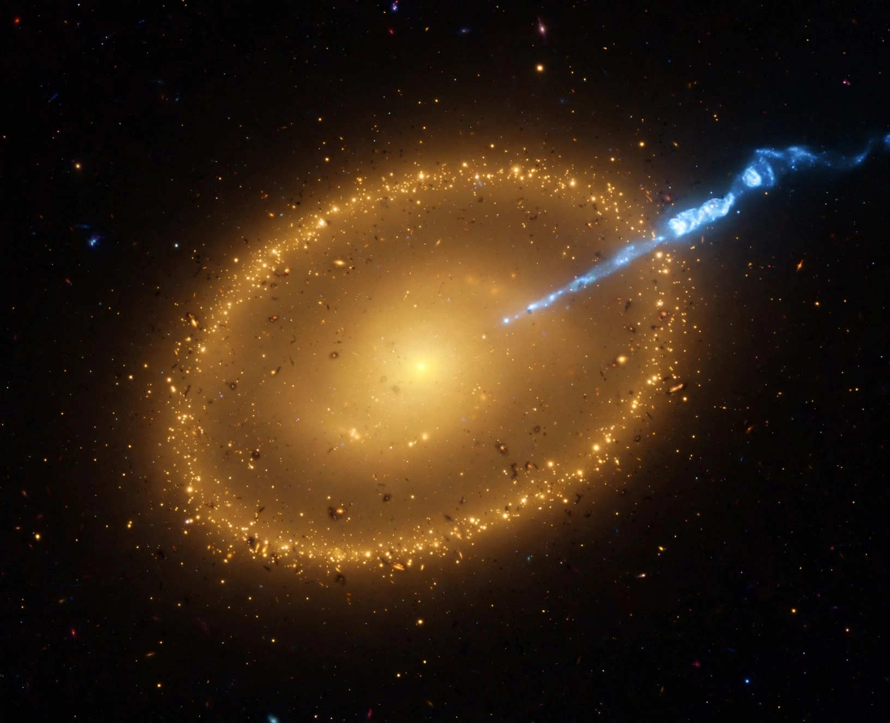

An elliptical galaxy is a type of galaxy with an approximately ellipsoidal shape and a smooth, nearly featureless image. They are one of the three main classes of galaxy described by Edwin Hubble in his Hubble sequence and 1936 work The Realm of the Nebulae, along with spiral and lenticular galaxies. Elliptical (E) galaxies are designated by their ellipticity, from E0 (nearly spherical) to E7 (highly elongated).

Unlike spirals, elliptical galaxies contain little cold gas and dust, show minimal ongoing star formation, and are dominated by old, red and yellow stars moving on random orbits — they are supported by velocity dispersion rather than rotation. They range from tiny dwarf ellipticals (among the faintest galaxies known) to the largest galaxies in the universe: giant ellipticals and cD galaxies at the centres of galaxy clusters, such as M87 in the Virgo Cluster, famous for its relativistic jet and the first imaged black-hole shadow.
Ellipticals are thought to form mainly through mergers of galaxies, which scramble discs into spheroids and trigger starbursts that consume or expel the gas; feedback from the central supermassive black hole then keeps the merged system "red and dead". Their stellar surface brightness follows characteristic profiles (de Vaucouleurs' r1/4 law, generalised by the Sérsic profile).
From Wikipedia, the free encyclopedia.